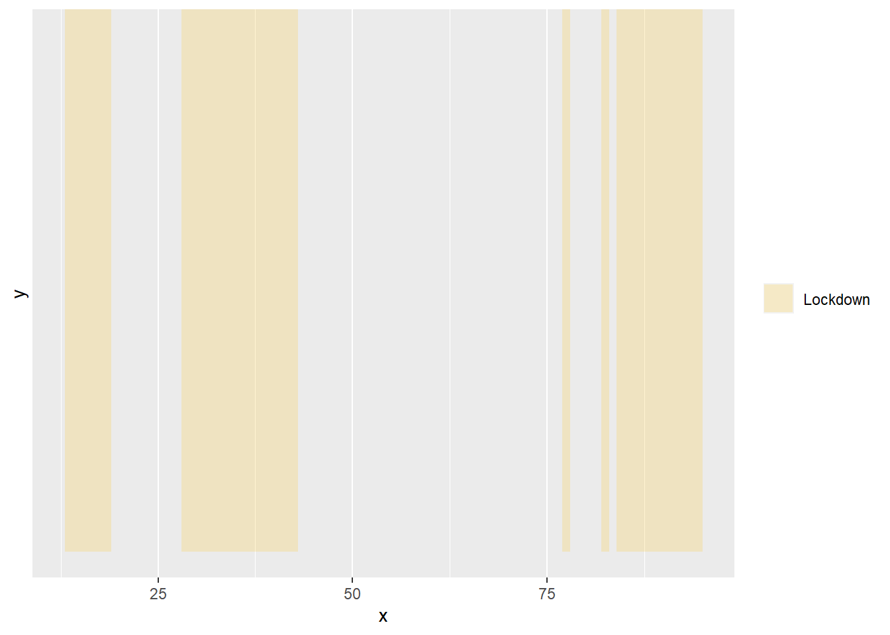

library(galah) #Load galah package
galah_config(email = "thai.rushbrook@gmail.com") #Add ALA registered email addressMy Title
12 weeks ago I entered into an internship with the Atlas of Living Australia. I already had some knowledge of the database and basic R-Studio skills, but only what I could obtain from university classes for my ecology bachelor’s degree. The task seemed straightforward: to ‘make something cool’ and share the results. The following is one example of what’s achievable with ALA data for a first-time user of the galah package.
I was excited at the prospect of creative freedom, but it certainly left room for ambiguity. Given the nature of the past few years, I was interested in what effect the Covid-19 pandemic may have had on Atlas of Living Australia occurrence records, and I had a vague interest in birds. I spent some time pulling various data from the ALA database until I settled on a research question; Was the number of ducks recorded in Melbourne significantly different in the lockdown periods of 2020-21 compared to 2017-19?
I also settled on analysing the number of occurrence records each week as this provided a fine level of detail while still producing a legible visualisation.
Step 1: Gathering data
During the height of the pandemic. Melbourne had 6 distinct lockdowns. I formed a table with the start and end date of each lockdown period so I could refer back to this periodically. I also added columns for the start and end date as a week of the year, which becomes helpful when plotting my data.
Lockdown <- c(1:6) #Set lockdown numbers 1-6
Start <- c("2020-03-31", "2020-07-09", "2021-02-13", "2021-05-28", "2021-07-16", "2021-08-05") #Start dates of each lockdown period (in order)
End <- c("2020-05-12", "2020-10-27", "2021-02-17", "2021-06-10", "2021-07-27", "2021-10-21") #End dates of each lockdown period (in order)
Melb_dates <- data.frame(Lockdown, Start, End) #Combine into a data frame
Melb_dates$Num_Days <- as.Date(as.character(Melb_dates$End), format="%Y-%m-%d")-
as.Date(as.character(Melb_dates$Start), format="%Y-%m-%d") #Convert dates to date/time format
library(tidyverse)
library(lubridate)
Melb_dates <- Melb_dates |>
mutate(weekstart = week(Start)) |> #Add a column converting start date into week of the year
mutate(weekend = week(End)) #Add a column converting end date into week of the year
Melb_dates #View results Lockdown Start End Num_Days weekstart weekend
1 1 2020-03-31 2020-05-12 42 days 13 19
2 2 2020-07-09 2020-10-27 110 days 28 43
3 3 2021-02-13 2021-02-17 4 days 7 7
4 4 2021-05-28 2021-06-10 13 days 22 23
5 5 2021-07-16 2021-07-27 11 days 29 30
6 6 2021-08-05 2021-10-21 77 days 31 42I knew I could filter from 2017-2021 with ‘year’, but not how to specify Melbourne results only. Searching for ‘city’ returned the field I needed, then from there I could search for the correct value using the field ID I had just returned.
search_fields("city") #Search for fields containing 'city'# A tibble: 1 × 4
id description type link
<chr> <chr> <chr> <chr>
1 cl10929 PSMA ABS Greater Capital City Statistical Areas (2016) AB… laye… http…search_fields("cl10929") |> #Search for values of that field using the ID
show_values()• Showing values for 'cl10929'.# A tibble: 16 × 2
field category
<chr> <chr>
1 cl10929 REST OF NSW
2 cl10929 REST OF VIC.
3 cl10929 REST OF QLD
4 cl10929 GREATER MELBOURNE
5 cl10929 REST OF SA
6 cl10929 GREATER SYDNEY
7 cl10929 GREATER BRISBANE
8 cl10929 REST OF WA
9 cl10929 AUSTRALIAN CAPITAL TERRITORY
10 cl10929 REST OF NT
11 cl10929 REST OF TAS.
12 cl10929 GREATER ADELAIDE
13 cl10929 GREATER PERTH
14 cl10929 GREATER DARWIN
15 cl10929 GREATER HOBART
16 cl10929 OTHER TERRITORIES From here on I knew I could filter using ‘GREATER MELBOURNE’.Now I could pull ALA duck records in Melbourne from 2017-21 using atlas_occurrences. I used the select function to only return the date and time of each record.
Ducksbyweek_data <- data.frame(
galah_call() |> #Call ALA data
galah_identify("Anatidae")|> #Identify ducks
galah_filter(cl10929 == "GREATER MELBOURNE", eventDate >= "2017-01-01T00:00:00Z", eventDate <= "2021-12-31T23:59:00Z") |> #Filter for 2017-2021 records in Melbourne
galah_select(eventDate) |> #Retrieve only event date of each entry
atlas_occurrences())Checking queue
Current queue size: 1. 0
Running query on selected atlas
|
| | 0%
|
|====== | 8%
|
|=============================== | 44%
|
|========================================================= | 81%
|
|======================================================================| 100%
DownloadingThis produces a data frame with a list of all occurrences. I needed to combine these so that I had a tally of occurrence records for each date.
Ducksbyweek_table <- Ducksbyweek_data #Create new data frame from previous
Ducksbyweek_table$eventDate <- #Add a new column for event date
as.Date(as.character(Ducksbyweek_table$eventDate),format="%Y-%m-%d") #Change event date to date format (year-month-day)
Ducksbyweek_table <- Ducksbyweek_table |>
count(eventDate) #Add column counting the number of occurrences of each date
Ducksbyweek_table <- Ducksbyweek_table |>
mutate(year = year(eventDate)) |> #Add a column with only the year of record
mutate(week = week(eventDate)) #Add a column with the week (of the year) of record
colnames(Ducksbyweek_table) = c("date","count", "year", "week") #Set column namesTo get a fair representation of the differences for comparison, I needed to scale my results for the total number of Atlas records each year. I wasn’t so much interested in the actual number of occurrences as how occurrences changed between years, without the influence of generally increasing popularity of the database over time. I could do this by looking at the number of duck occurrences as a proportion of overall records. For this, I needed to create a data frame with the overall number of records in Melbourne each year.
Allmelbrecords_data <- as.data.frame(
galah_call() |>
galah_filter(cl10929 == "GREATER MELBOURNE", year >= 2017, year <= 2021) |>
galah_group_by(year) |> #Summarise the number of occurrence records for each year
atlas_counts())
Allmelbrecords_data$year = as.numeric(Allmelbrecords_data$year) #Convert years into numeric form
Allmelbrecords_data <- Allmelbrecords_data[order(-Allmelbrecords_data$year), , drop = TRUE] #Order years in descending order (2021-2017)
rownames(Allmelbrecords_data) <- c(1:5) #Rows 3 and 4 keep swapping so I renamed the rows 1-5.
Allmelbrecords_data #View results year count
1 2021 916964
2 2020 749289
3 2019 548033
4 2018 580995
5 2017 495291Step 2: Organising data
It was far easier to scale each value with everything organised into columns according to year. I achieved this using pivot_wider, and then scaled each column according to the corresponding value in the table of total records I had just created.
library(tidyverse)
Ducksbyweek_scaled <- Ducksbyweek_table |> pivot_wider(
names_from = year, #Take column names from 'year' data column
values_from = count, #Take values from 'count' data column
names_sort = TRUE) #Order columns names (i.e. years)
Ducksbyweek_scaled$"2017" = (Ducksbyweek_scaled$"2017"/Allmelbrecords_data[5,2])*100 #Counts in 2017 column, divided by the overall number of records in 2017 (multiplied by 100) returns counts as a proportion of overall records
Ducksbyweek_scaled$"2018" = (Ducksbyweek_scaled$"2018"/Allmelbrecords_data[4,2])*100
Ducksbyweek_scaled$"2019" = (Ducksbyweek_scaled$"2019"/Allmelbrecords_data[3,2])*100
Ducksbyweek_scaled$"2020" = (Ducksbyweek_scaled$"2020"/Allmelbrecords_data[2,2])*100
Ducksbyweek_scaled$"2021" = (Ducksbyweek_scaled$"2021"/Allmelbrecords_data[1,2])*100
Ducksbyweek_scaled #View results# A tibble: 1,826 × 7
date week `2017` `2018` `2019` `2020` `2021`
<date> <dbl> <dbl> <dbl> <dbl> <dbl> <dbl>
1 2017-01-01 1 0.0315 NA NA NA NA
2 2017-01-02 1 0.0190 NA NA NA NA
3 2017-01-03 1 0.0200 NA NA NA NA
4 2017-01-04 1 0.0228 NA NA NA NA
5 2017-01-05 1 0.0149 NA NA NA NA
6 2017-01-06 1 0.0166 NA NA NA NA
7 2017-01-07 1 0.0210 NA NA NA NA
8 2017-01-08 2 0.0204 NA NA NA NA
9 2017-01-09 2 0.0166 NA NA NA NA
10 2017-01-10 2 0.0273 NA NA NA NA
# … with 1,816 more rowsMy data was now organised and appropriately scaled, however contained a number of ‘NA’ values which would make it extremely difficult to calculate the mean of 2017-19 counts later on. To remove these, I needed to put the data frame back in it’s original format using pivot_longer.
Ducksbyweek_long <- Ducksbyweek_scaled |>
pivot_longer(cols=c("2017", "2018", "2019", "2020", "2021"), #Select columns to pivot
names_to = "year", #Columns names to go to new column titled 'year'
values_to = "count") #Values to go to new column titled 'count'
Ducksbyweek_long <- na.omit(Ducksbyweek_long) #Remove entries with 'NA'As I mentioned previously, I was interested in narrowing this down to the number of occurrences by week rather than daily.
Ducksbyweek_grouped <- Ducksbyweek_long
Ducksbyweek_grouped <- data.frame(Ducksbyweek_grouped |>
group_by(week,year) |> #Group by week and year
summarise(across(c(count), sum))) #Sum 'count' numbers in each groupNow I could calculate the average (mean) weekly counts from 2017-19 without producing an error. It was easiest to do this by using pivot_wider again, so that I could calculate the mean accross rows using rowMeans.
Ducksbyweek_mean <- Ducksbyweek_grouped |> #Pivot wider again
pivot_wider(names_from = year,
values_from = count,
names_sort = TRUE)
Ducksbyweek_mean$"2017_19_mean" = rowMeans(Ducksbyweek_mean[,2:4]) #Add row with 2017-19 average
Ducksbyweek_mean #View results# A tibble: 53 × 7
week `2017` `2018` `2019` `2020` `2021` `2017_19_mean`
<dbl> <dbl> <dbl> <dbl> <dbl> <dbl> <dbl>
1 1 0.146 0.177 0.352 0.185 0.137 0.225
2 2 0.153 0.195 0.323 0.125 0.117 0.224
3 3 0.154 0.161 0.279 0.165 0.127 0.198
4 4 0.182 0.160 0.241 0.159 0.110 0.194
5 5 0.173 0.172 0.199 0.105 0.127 0.181
6 6 0.134 0.141 0.196 0.115 0.129 0.157
7 7 0.150 0.182 0.196 0.0968 0.0984 0.176
8 8 0.161 0.147 0.222 0.103 0.119 0.177
9 9 0.129 0.150 0.139 0.0853 0.116 0.139
10 10 0.135 0.128 0.229 0.0774 0.105 0.164
# … with 43 more rowsI had my dataset, it just needed a bit of reorganising to make it suitable for plotting. Counts were grouped by week of the year, meaning I had 2 sets of 1-52 (one for 2020, one for 2021). To plot these in order along an axis I needed to convert this to 1-53 for 2020, then 54-106 for 2021.
Ducksbyweek_select <- Ducksbyweek_mean[,-c(2:4)] #Create a new data frame with relevant columns from previous (i.e. week, 2017-19 mean, 2020 and 2021 counts)
Ducksbyweek_2020 <- Ducksbyweek_select[,-3]
Ducksbyweek_2021 <- Ducksbyweek_select[,-2] #Separate 2020 and 2021 data
Ducksbyweek_2021 <- as.data.frame(Ducksbyweek_2021) #Convert to data frame
Ducksbyweek_2021$week <- c(54:106) #Change 'week' to 54-106
rownames(Ducksbyweek_2021) <- c(54:106) #Change row names so when we combine data frames later, they appear after rows 1-53 (2020 data)
colnames(Ducksbyweek_2020)[2] = "count"
colnames(Ducksbyweek_2021)[2] = "count" #Change column names to 'count' so they match
Ducksbyweek_plottingdata <- rbind(Ducksbyweek_2020,Ducksbyweek_2021) #Combine into one data frame, suitable for plottingStep 3: Plot!
Plot
library(pilot)
Ducksbyweek_pilot1 <- ggplot() +
scale_fill_manual(
values=c("Lockdown" = pilot_color("yellow")), #Lockdowns will be highlighted in yellow
name = NULL) + #Remove legend title for 'lockdown'
scale_color_manual(
values = c(pilot_color("orange"),pilot_color("blue")), #Set line colours as orange and blue
labels=c("2017-19 average", "2020-21 occurrences", #label lines appropriately
name = "Year")) #Legend title = 'year'dsf
Ducksbyweek_pilot2 <- Ducksbyweek_pilot1 +
geom_rect(aes(NULL,NULL, #No mapping or data frame required
xmin=13,xmax=19, #Take x values from start and end date in table of lockdown dates we created first
fill="Lockdown"),
ymin=0,ymax=Inf,
color= NA, #For some reason I need to do this first or they have a border
alpha=0.2) + #Adjust transparency
geom_rect(aes(NULL,NULL,
xmin=28,xmax=43,
fill="Lockdown"),
ymin=0,ymax=Inf,
fill=pilot_color("yellow"),
alpha=0.2) +
#Repeat for each lockdown!
geom_rect(aes(NULL,NULL,xmin=60,xmax=60,fill="Lockdown"),
ymin=0,ymax=Inf, fill=pilot_color("yellow"), alpha=0.2) +
geom_rect(aes(NULL,NULL,xmin=77,xmax=78,fill="Lockdown"),
ymin=0,ymax=Inf, fill=pilot_color("yellow"), alpha=0.2) +
geom_rect(aes(NULL,NULL,xmin=82,xmax=83,fill="Lockdown"),
ymin=0,ymax=Inf, fill=pilot_color("yellow"), alpha=0.2) +
geom_rect(aes(NULL,NULL,xmin=84,xmax=95,fill="Lockdown"),
ymin=0,ymax=Inf, fill=pilot_color("yellow"), alpha=0.2)dsfsd
Ducksbyweek_pilot3 <- Ducksbyweek_pilot2 +
geom_line(data = Ducksbyweek_plottingdata,
aes(x = week, y = count, #Plot 2020-21 line using 'count' column
color = "2020-21 Records"),
linewidth=0.7) + #Set thickness of line
geom_line(data = Ducksbyweek_plottingdata,
aes(x = week, y = Ducksbyweek_plottingdata$"2017_19_mean", #Plot 2017-19 line using 'mean' column
color = "2017-19 Average"),
linetype = "twodash",
linewidth=0.5) +
geom_area(data = Ducksbyweek_plottingdata, #Fill area under the 2020-21 line
aes(x = week, y = count),
fill=pilot_color("blue"),
alpha=0.3)asdsda
Ducksbyweek_pilot4 <- Ducksbyweek_pilot3 +
labs(color= "Year", #Set axis labels and caption
x = "Week Number",
y = "Ducks recorded",
caption = "Produced using the Galah package by Atlas of Living Australia")+
scale_x_continuous(expand = c(0, 0), limits = c(0, 104)) +
scale_y_continuous(expand = c(0, 0), limits = c(0, NA)) #Set axis limits
Ducksbyweek_pilot4 #View resultsWarning: Use of `Ducksbyweek_plottingdata$"2017_19_mean"` is discouraged.
ℹ Use `2017_19_mean` instead.Warning: Removed 2 rows containing non-finite values (`stat_align()`).Warning: Removed 2 rows containing missing values (`geom_line()`).
Removed 2 rows containing missing values (`geom_line()`).
hgdfh
library(showtext)Loading required package: sysfontsLoading required package: showtextdbfont_add_google("Montserrat", family = "mont")
font_add_google("Hind", family = "hind") #Download fonts from Google fonts
showtext_auto(enable = TRUE) #Make 'font family' functions select from showtext packageassad
Ducksbyweek_pilottitles <- add_pilot_titles( #Add titles in pilot theme
Ducksbyweek_pilot4,
title = "Ducks Recorded in Greater Melbourne 2020-21 Compared to Previous Years",
subtitle = "By week, with lockdowns highlighted in yellow - Scaled for total Atlas records") +
theme_pilot(
set_pilot_family("hind", title_family = "mont"), #Set font family for title and body separately
grid = "", #No grid lines
axes = "bottom", #Keep bottom axis
legend_position = "right",
caption_position = "right",
title_size = 17, #Set label font sizes
subtitle_size = 15,
axis_title_size = 14,
axis_text_size = 14,
legend_title_size = 15,
legend_text_size = 13,
facet_title_size = 13,
caption_size = 10)+
theme(axis.text.y=element_blank(), #Remove y axis
axis.ticks.y=element_blank())
Ducksbyweek_pilottitles #View resultsWarning: Use of `Ducksbyweek_plottingdata$"2017_19_mean"` is discouraged.
ℹ Use `2017_19_mean` instead.Warning: Removed 2 rows containing non-finite values (`stat_align()`).Warning: Removed 2 rows containing missing values (`geom_line()`).
Removed 2 rows containing missing values (`geom_line()`).
sdgasd
library(png)
library(cowplot)
library(magick)
imgDuck <- readPNG(file.path("C:", "Users", "thair", "Downloads", "rubberduck.png")) #Import image from downloadssfsdf
Ducksbyweek_pilot_final <- ggdraw() +
draw_plot(Ducksbyweek_pilottitles) +
draw_image(imgDuck, #Select file name
x = 0.7, #Select image location
y = 0.15,
width = 0.2,
height = 0.2) #Select image size
Ducksbyweek_pilot_final #View results